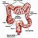
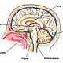

OncoGuía - Tipos de cáncer
-
 Adenoma de HipófisisGlándula situada en la silla turca
Adenoma de HipófisisGlándula situada en la silla turca -

ColonLa última porción del aparato digestivo
-
 Cuello Uterino/Cérvixparte más inferior del aparato rep. femenino
Cuello Uterino/Cérvixparte más inferior del aparato rep. femenino -
 Endometrio/úteroórgano hueco, situado en la pelvis.
Endometrio/úteroórgano hueco, situado en la pelvis. -
 Esófagotubo hueco que transporta los alimentos
Esófagotubo hueco que transporta los alimentos -
 Estómagositúado en la parte alta del abdomen
Estómagositúado en la parte alta del abdomen -
 GliomasTumores cerebrales que proceden de las células gliales
GliomasTumores cerebrales que proceden de las células gliales -
 MamaGlándula destinada a la producción de leche
MamaGlándula destinada a la producción de leche -
 Médula Espinalel tejido nervioso más extenso del cuerpo
Médula Espinalel tejido nervioso más extenso del cuerpo -
 Meduloblastomatumores malignos en la fosa posterior del cerebro
Meduloblastomatumores malignos en la fosa posterior del cerebro -
 MelanomaCrecimiento de los melanocitos
MelanomaCrecimiento de los melanocitos -
 MeningiomasTumor cerebral usualmente benigno
MeningiomasTumor cerebral usualmente benigno -

Metástasis CerebralesLesiones tumorales situadas en el cerebro y que proceden de otros tumores
-
 No MelanomaEl tumor más frecuente del ser humano
No MelanomaEl tumor más frecuente del ser humano -
 PáncreasGlándula que participa en el proceso de la digestión
PáncreasGlándula que participa en el proceso de la digestión -
 PróstataGlándula sexual exclusiva de los varones
PróstataGlándula sexual exclusiva de los varones -
 PulmónDos pulmones (derecho e izquierdo) localizados en el tórax.
PulmónDos pulmones (derecho e izquierdo) localizados en el tórax. -
 RectoLa última porción del aparato digestivo
RectoLa última porción del aparato digestivo -
 Tumores InfantilesCada año se diagnostican 1.200 casos nuevos de tumores infantiles
Tumores InfantilesCada año se diagnostican 1.200 casos nuevos de tumores infantiles -
 Vejigaórgano situado en la parte baja de la pelvis
Vejigaórgano situado en la parte baja de la pelvis
Metástasis Cerebrales
Introducción
El sistema nervioso central está formado por dos estructuras básicas: el encéfalo y la médula espinal, que se encargan de controlar todas las funciones del organismo.
El encéfalo, a su vez está integrado por el cerebro, el cerebelo y el tronco cerebral. Se encuentra rodeado por unas membranas, denominadas meninges, entre las que circula libremente el líquido cefalorraquídeo. Se encuentra contenido en una estructura ósea rígida, que lo protege denominada cráneo.
-
Cerebro: Se encarga de las funciones cognitivas, entre otras, la capacidad del habla, el pensamiento, el aprendizaje y la memoria, además de determinadas respuestas motoras y emocionales. Está formado por dos hemisferios, derecho e izquierdo, que se encuentran separados entre sí por un surco central (cisura longitudinal). A su vez, cada hemisferio se divide en 4 lóbulos: frontal, temporal, parietal y occipital. Cada uno de ellos interviene en determinadas funciones superiores:
- El lóbulo frontal: Situado en la parte más anterior del cerebro. Interviene en las características de la personalidad, la inteligencia, el lenguaje y la escritura.
- El lóbulo temporal: Juega un papel básico en la capacidad de memoria, del lenguaje y en las sensaciones auditivas.
- El lóbulo occipital: Se encuentra localizado en la parte más posterior. Se encarga de procesar y analizar la información visual.
- El lóbulo parietal: Situado lateralmente en el cerebro. Interviene en la capacidad de identificar objetos y las relaciones espaciales del cuerpo en relación al exterior.
- Cerebelo: Situado en la parte más posterior e inferior del cráneo. Es el encargado de regular de forma automática determinados movimientos y de mantener la postura, la estabilidad y el equilibrio.
- Tronco cerebral: Situado por delante del cerebelo, conecta el cerebro con la médula espinal. Es una estructura fundamental, ya que es el encargado de funciones vitales como la respiración, la tos, el latido cardiaco, la tensión arterial, la temperatura corporal y la deglución.
Las metástasis cerebrales son lesiones tumorales situadas en el cerebro y proceden de otros tumores localizados a distancia (por ejemplo de un cáncer de pulmón).
Prevención
Se desconocen los factores que favorecen el origen y desarrollo de las metástasis cerebrales. Sabemos que algunos tumores primarios como el cáncer de pulmón o el melanoma tienen más tendencia que otros a desarrollar metástasis cerebrales.
Diagnóstico precoz
En la actualidad no existe ninguna prueba ni programa de screening que permita realizar un diagnóstico precoz de las metástasis cerebrales. No obstante, es importante acudir al médico ante cualquier síntoma que perdure en el tiempo.
Síntomas y Diagnóstico Clínico:
Producen síntomas en la mayoría de los casos. Su naturaleza y severidad depende del tamaño, número y localización. Generalmente las manifestaciones son progresivas a lo largo de días o semanas aunque pueden aparecer de forma aguda por una crisis epiléptica (10-20%), o a consecuencia de un sangrado intratumoral (5-10%).
Los síntomas se producen como consecuencia del crecimiento tumoral. Aparece un compromiso de espacio, ya que el cerebro se encuentra en el interior de una estructura ósea rígida, por lo que aumenta la presión en el interior. Los síntomas derivados del aumento de la presión son los siguientes:
- Cefalea intensa (dolor de cabeza).
- Vómitos (generalmente por la mañana), que pueden o no ir acompañados de náuseas.
- Alteración del nivel de conciencia y somnolencia
A estos síntomas se añaden otros que serán diferentes en función de la localización del tumor: es muy frecuente la presencia de los trastornos de conducta, la desorientación témporo - espacial, trastornos del lenguaje, y la focalidad neurológica según la localización de la lesión.
- Lóbulo frontal: cuando la metástasis cerebral crece en esta localización los síntomas se relacionan con alteraciones de la personalidad, de la memoria y del lenguaje. Otros síntomas pueden ser parálisis o disminución de fuerza en la mitad del cuerpo (hemiplejia izda. o dcha.) y mareo.
- Lóbulo parietal: en este caso, se observa dificultad en la coordinación de determinados movimientos, en la orientación del cuerpo en el espacio y reconocer las distintas partes del cuerpo. Asimismo, puede aparecer dificultad para hablar o entender el significado de las palabras y alteración de las funciones de lectura y escritura.
- Lóbulo occipital: El síntoma fundamental es la pérdida o alteración de la visión, además de mareos.
- Lóbulo temporal: Las metástasis cerebrales en esta zona suelen ser más silentes, pueden causar mareos y alteraciones en el lenguaje.
- Tronco del encéfalo: en esta localización suelen aparecer muchos síntomas como vómitos, cefalea, marcha descoordinada, dificultad para hablar y para tragar, alteraciones en la visión y audición, y somnolencia.
- Cerebelo: Inestabilidad en la marcha, ausencia de coordinación en los movimientos, alteraciones del habla y vértigos.
Cuando el médico sospecha la posibilidad de una metástasis cerebral es fundamental la realización de una serie de pruebas como:
- TAC o Tomografía Computerizada (escáner) basada en la utilización de rayos X que generan imágenes detalladas del cráneo y cerebro. En ocasiones, es preciso utilizar contraste para resaltar alguna estructura como los vasos sanguíneos. Con esta prueba, se puede ver la lesión y su situación en relación con otras estructuras cerebrales.
- Resonancia magnética (RM) cerebral: procedimiento basado en el uso de radiofrecuencias en un campo magnético, en la que se puede utilizar contraste para definir mejor los tejidos a explorar. Es la prueba más útil para valorar la lesión así como el resto del tejido cerebral. En este tipo de tumor se aprecia una masa sólida en línea media con intensa captación de contraste.